AI
Inspiration session
Mortgages
Concerning Magic...
Pleased to meet you!
- Tech Lead - Akkuro Lending
- A.I. Document Extraction
- A.I. evangelist
- Kosdapapa Piggybank app

- Prompt engineering @ topiconf
- Kosdapapa Piggybank app
Today's Journey
- Large Language Models - Understanding the magic behind AI
- AI in Way of Working - Transforming how we collaborate
- AI in Applications - Real-world AI implementations
- Prompt Engineering - The art of talking to AI
- Some Tips and Q&A - Some tips and questions and insights
Large Language Models
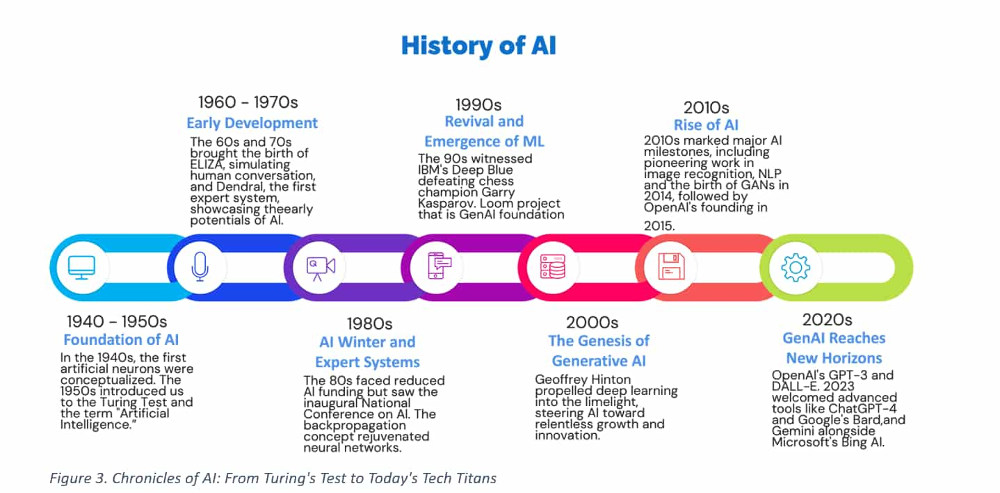
What is an LLM?
- Traditional AI: Data → Label → Train → Predict
- Example: Risk model for company defaults
- LLMs: A specific type of model...
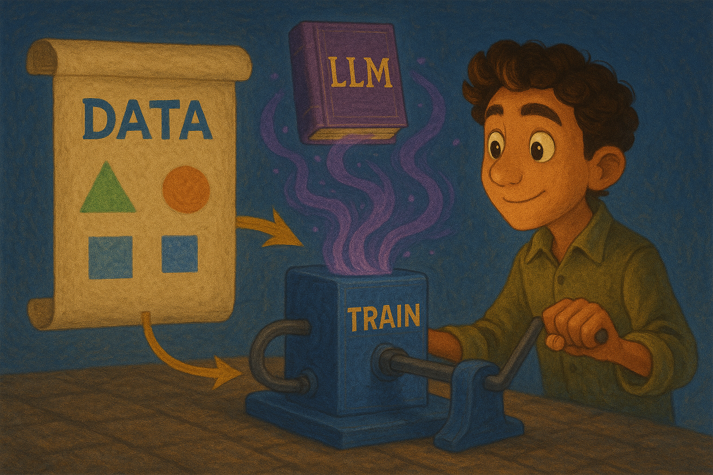
Based on Probability
Capabilities
LLMs excel where both the input and output are words, and the rules are fuzzy.
- Text generation and completion
- Language translation
- Code generation and debugging
- Question answering and reasoning
- Creative writing and content creation
- Data analysis and summarization
Limitations
LLMs struggle with precision, real-time data, and tasks requiring exact logic.
- Hallucinations - making up facts confidently
- Mathematical calculations and precise logic
- No access to real-time information
- Consistent personality or memory across sessions
- Understanding of physical world constraints
- Inability to learn from individual conversations
AI in Way of Working
How AI is changing the way we work and collaborate.
- Responsible AI - What can we use? And why?
- Thousands of AI tools launched daily
- Key question: Where is my data going?
- 2 kinds of data you should keep in mind
- GDPR and Personal Identifiable Information
- Proprietary data protection
WoW Examples
Tools, Tools, Tools...
AI in our applications
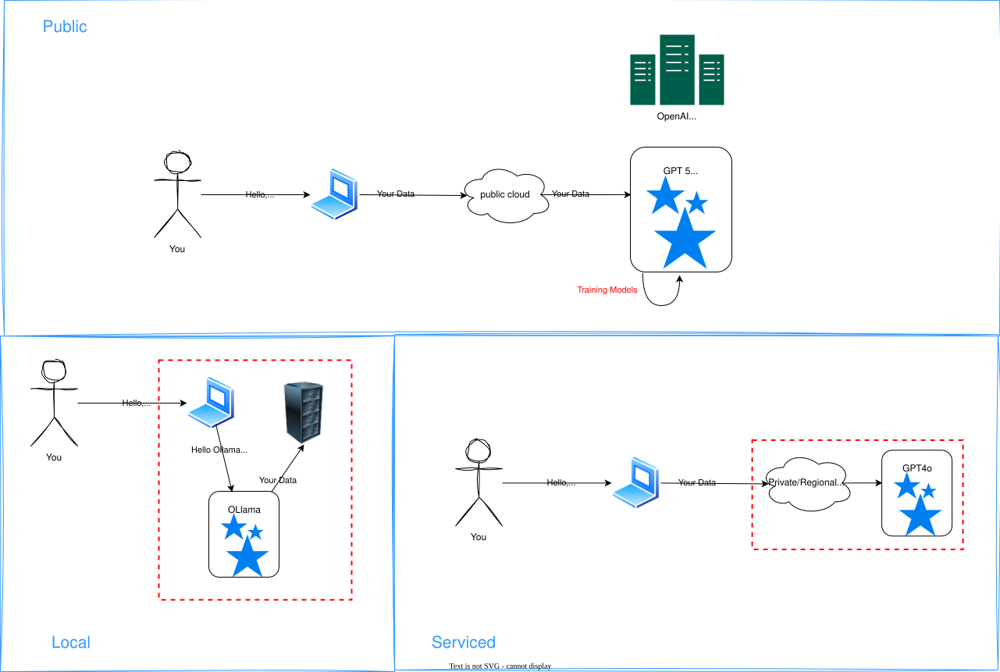
Applications of AI, What Can It Do?
Architectures and Solutions
How to build AI into your applications
Cost
Pay per Token: Smallest unit of information a model processes
- AI uses compute - costs based on operations performed
- Token = small word or part of a word
- Larger models = more compute = higher cost
- Multi-modality complexity (images = tiles after size reduction)
- THIS GETS REALLY COMPLEX, QUICKLY
- Best approach: Try, measure tokens, calculate
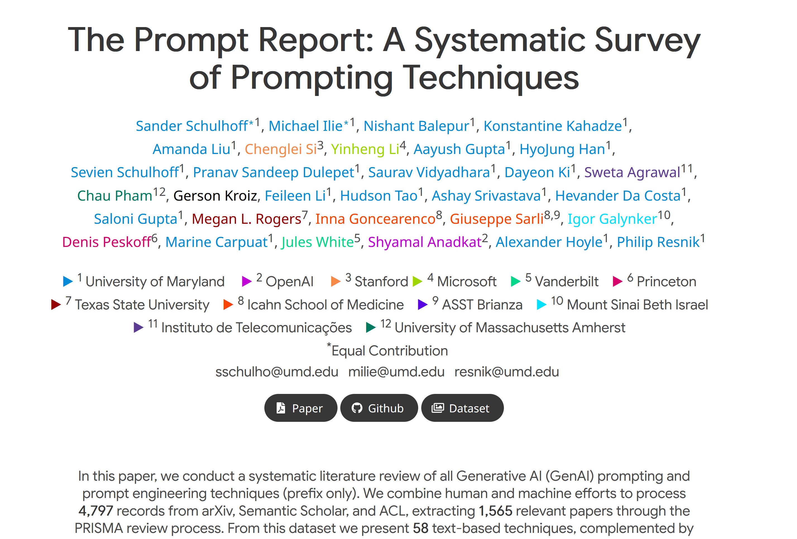
1565 papers
~100 prompting techniques
Prompt Structure
Role
Instruction
Context
Constraints & Guidelines
Output Format
Poorly written prompt
Explain how I can improve the performance of my application when retrieving information from the database.
Prompting Patterns
Show examples instead of explaining rules
Makes thinking process visible for complex problems
Like a consultant gathering requirements
Prompts in your application
🤖 Prompts = 💻 Code
- 📋 Version Control - Track changes with source control
- 🏷️ Versioning - Version prompts across releases
- ✅ Testing - Add automated tests for prompts
- 🔄 Evaluation - Automate prompt output evaluation
Risks
Three main types of prompt attacks to defend against:
-
Prompt Extraction
Extracting the application's system prompt to replicate or exploit -
Jailbreaking & Prompt Injection
Getting the model to perform harmful or unintended actions -
Information Extraction
Getting the model to reveal training data or context information
Possible Consequences
-
Remote Code or Tool Execution
Unauthorized execution of code or system tools -
Data Leaks
Extraction of private system and user information -
Social Harms
Providing knowledge for dangerous or criminal activities -
Misinformation
Manipulation of model outputs to spread false information -
Service Interruption and Subversion
Unauthorized access, incorrect decisions, or service disruption -
Brand Risk
Toxic or inappropriate statements causing PR crises
Agentic Development Explained as Killing Orcs
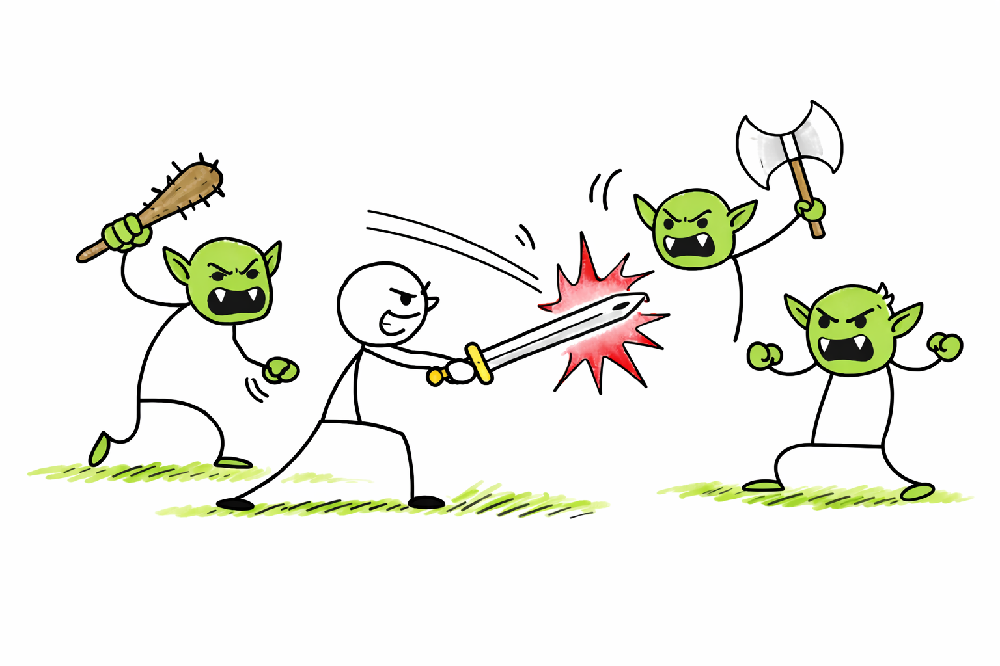
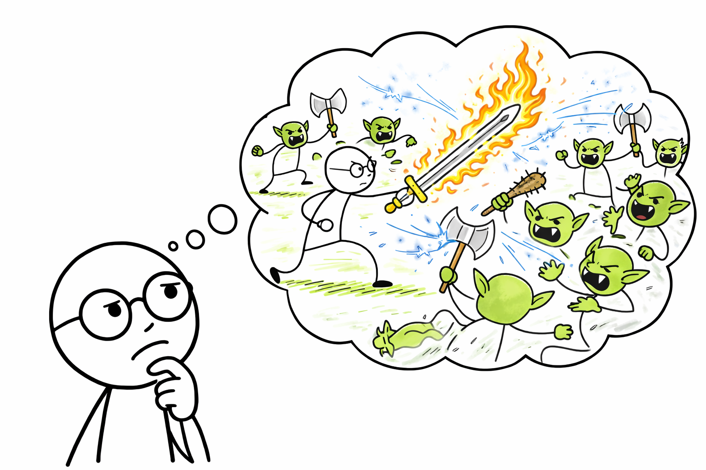
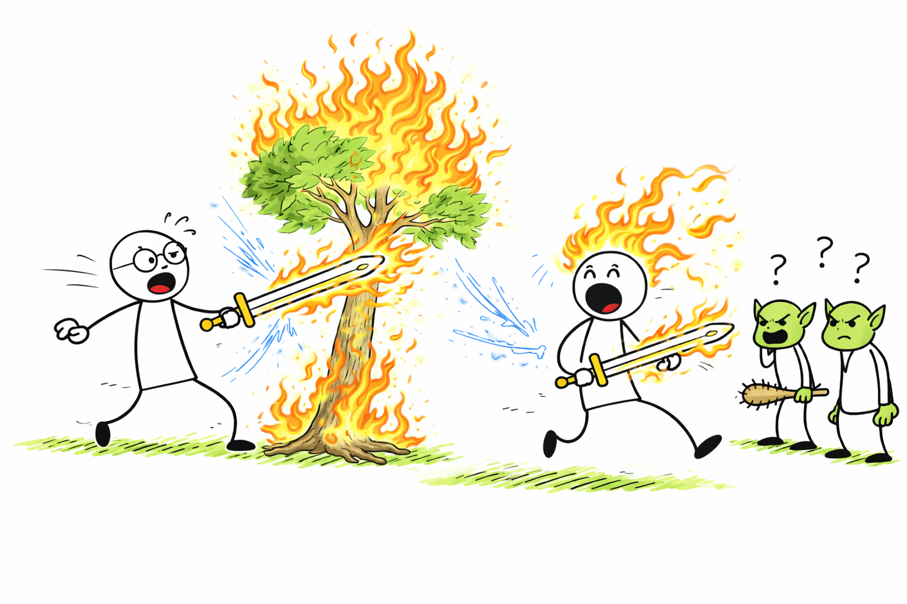
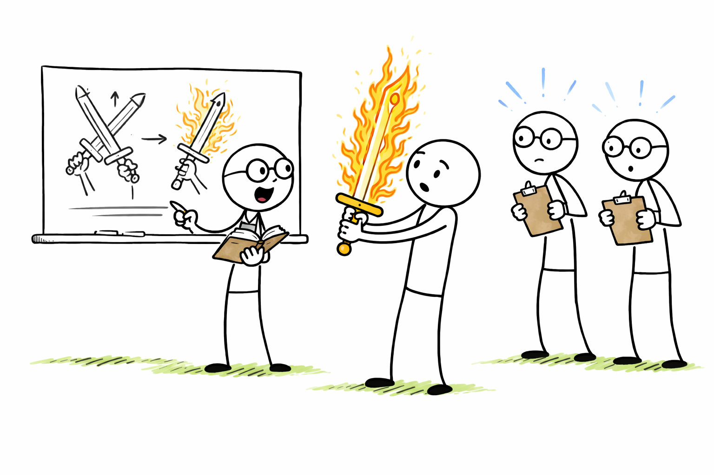
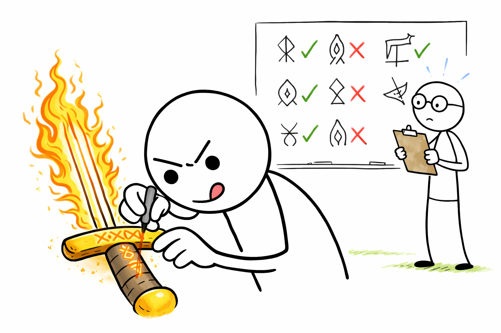
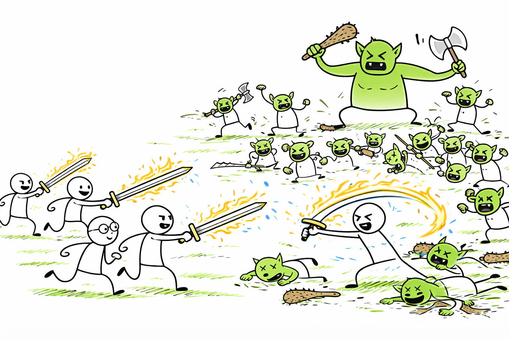
In the Real World
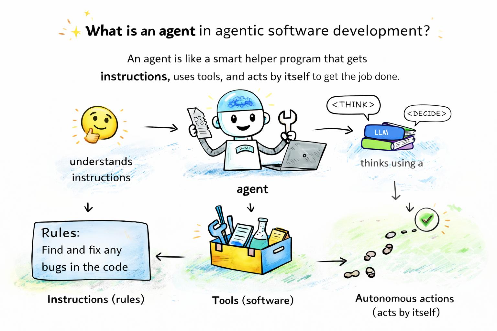
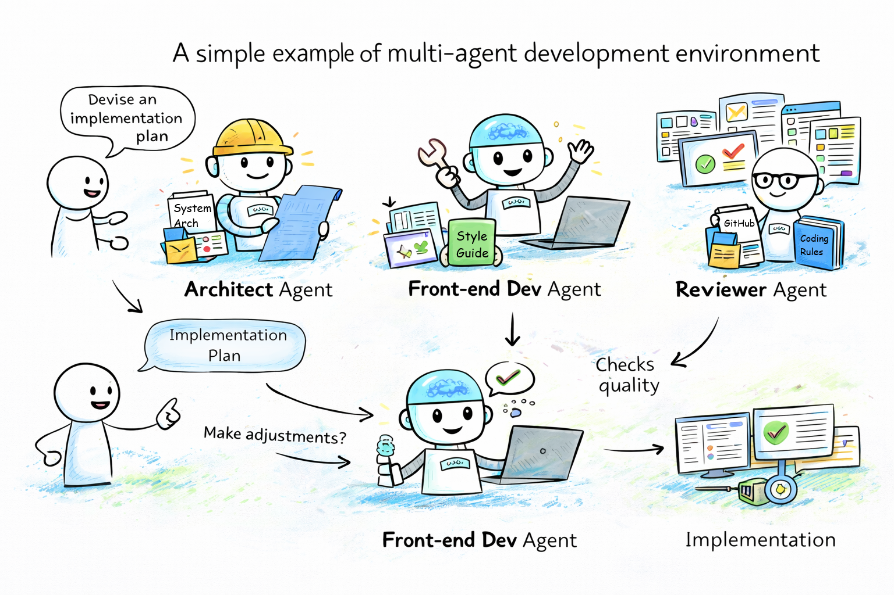
"I'm not joking and this isn't funny. We have been trying to build distributed agent orchestrators at Google since last year. There are various options, not everyone is aligned, etc. I gave Claude Code a description of the problem, it generated what we built last year in an hour.
It's not perfect and I'm iterating on it, but this is where we are right now. If you are skeptical of coding agents, try it on a domain you are already an expert in. Build something complex from scratch where you can be the judge of the artifacts."
— Jaana Dogan, Principal Engineer at Google
"For more than 15 years, I thought I loved writing code, loved typing out code by hand, and loved the "cadence of typing", as Gary Bernhardt once called it; sitting in front of my editor with my fingers click-clacking on my keyboard.
Now, I'm not so sure.
2025 was the year in which I deeply reconsidered my relationship to programming. In previous years, I had the occasional "should I become a Lisp guy?", for sure; but not the question "do I even like typing out code?"
What I learned over the course of the year is that typing out code by hand now frustrates me."
— Thorsten Ball, Software Engineer at Amp
"It's been a crazy holiday period: I built 2 major open-source projects. I started writing a book. I fixed a bunch of other things.
It's a very different world now that we're in Opus 4.5 world, and these would absolutely not have been possible without it. Opus + Claude Code now behaves like a senior software engineer whom you can just tell what to do, and it'll do it. Supervision is still needed for difficult tasks, but it is extremely responsive to feedback and then gets it right.
I don't want to be too dramatic, but y'all have to throw away your priors. The cost of software production is trending towards zero."
— Malte Ubl, CTO at Vercel
A Change of Mind
"Overall, the models are not there. I feel like the industry is making too big of a jump and is trying to pretend like this is amazing, and it's not.
It's slop.
They're not coming to terms with it, and maybe they're trying to fundraise or something like that. I'm not sure what's going on, but we're at this intermediate stage. The models are amazing. They still need a lot of work.
For now, autocomplete is my sweet spot. But sometimes, for some types of code, I will go to an LLM agent."
— Andrej Karpathy
"I've never felt this much behind as a programmer.
The profession is being dramatically refactored as the bits contributed by the programmer are increasingly sparse. I have a sense that I could be 10X more powerful if I just properly string together what has become available over the last ~year, and a failure to claim the boost feels decidedly like a skill issue.
There's a new programmable layer of abstraction to master ... a need to build an all-encompassing mental model for strengths and pitfalls of fundamentally stochastic, fallible, unintelligible and changing entities suddenly intermingled with what used to be good old fashioned engineering.
Clearly some powerful alien tool was handed around, except it comes with no manual and everyone has to figure out how to hold and operate it while the resulting magnitude 9 earthquake is rocking the profession.
Roll up your sleeves to not fall behind."
— Andrej Karpathy
An R&D journey from IDE to agentic AI in 3 months
The Aion story of how to get >95% AI-generated code
The Good and Bad
- ▸ Tech lead skills increasingly in demand
- ▸ Testing & validation expertise critical
- ▸ Architecture decisions more important than ever
- ▸ Reliability, performance, security skills highly prized
- ▸ Non-technical people can now prototype apps
- ▸ Language specialization becoming less valuable
- ▸ Frontend/backend roles increasingly blurred
- ▸ Routine implementation work automated by AI
Questions and Discussion
Check out the slides!
@Marco van de Haar